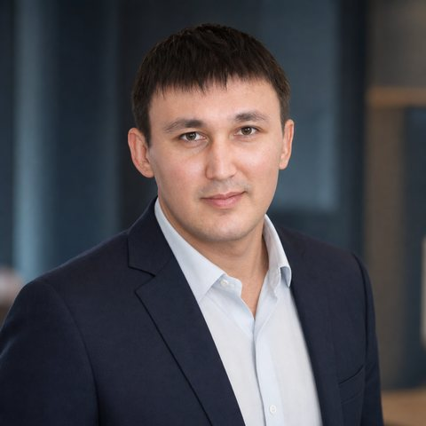

Ильшат
Фахритдинов
Встраиваю нейросети в бизнес и повседневную жизнь так, чтобы они приносили результат каждый день, а не были игрушкой.

Обо мне
Работаю с нейросетями с конца 2022 года — с момента их выхода на массовый рынок. Прошёл путь от первых экспериментов до ежедневной работы, в которой нейросети стали полноценными коллегами. Каждый приём, которому учу, сначала проверяю на собственных задачах.
По профессии — руководитель продаж в финтехе. Построил с нуля несколько отделов продаж, создал собственный бизнес. Смотрю на нейросети глазами управленца: инструмент должен экономить время и давать понятный результат.
Чем помогаю
Внедрение в бизнес
Регламенты, скрипты продаж, аналитика, отчёты и подготовка к переговорам с помощью нейросетей.
Обучение команд
Учу сотрудников работать с нейросетями простым языком, на их реальных задачах.
Автоматизация рутины
Тексты, предложения клиентам, разбор документов и анализ рынка — быстрее и без потери качества.
Продажи
Построение отдела продаж с нуля: процессы, найм, обучение, метрики.
С какими нейросетями работаю
Российские
- GigaChat
- YandexGPT и Алиса
- Kandinsky
- Шедеврум
Зарубежные
- ChatGPT
- Claude
- Gemini
- DeepSeek
- Perplexity
- Microsoft Copilot
- Grok
- Midjourney
- Suno
Курс «Claude с нуля»
Интерактивный 8-недельный курс для тех, кто никогда не пользовался нейросетями: 9 модулей, 39 уроков, 56 готовых запросов, тесты и словарь. Работает в браузере без регистрации.
Контакты
Обсудить внедрение нейросетей, обучение команды или курс.